Foge, Douglas! · arte em construção
Rascunhos v0 das caricaturas no novo estilo (charge). A revisão de semelhança ainda não foi feita. Elas vão para as cutscenes em quadrinhos, o retrato do perseguidor no HUD e os rostos 3D. Voltar ao jogo
Cláudio Castroo chefe
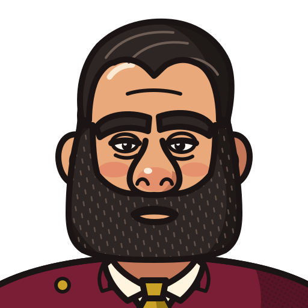
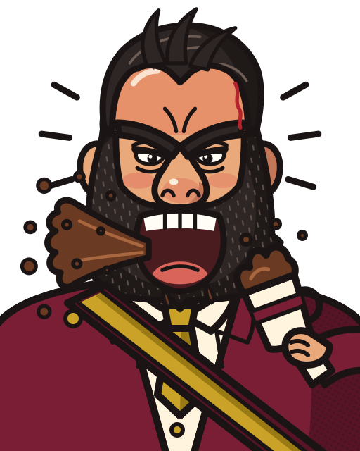
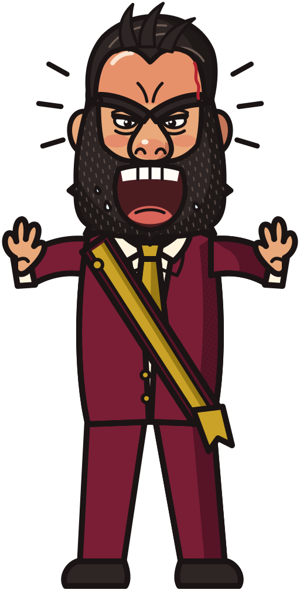
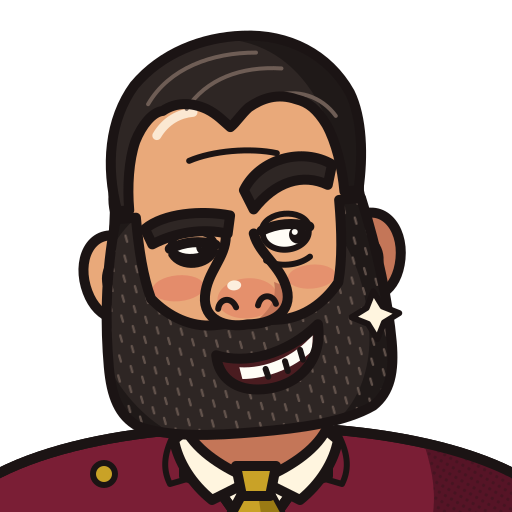
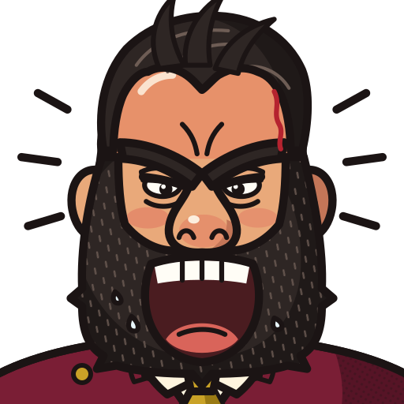
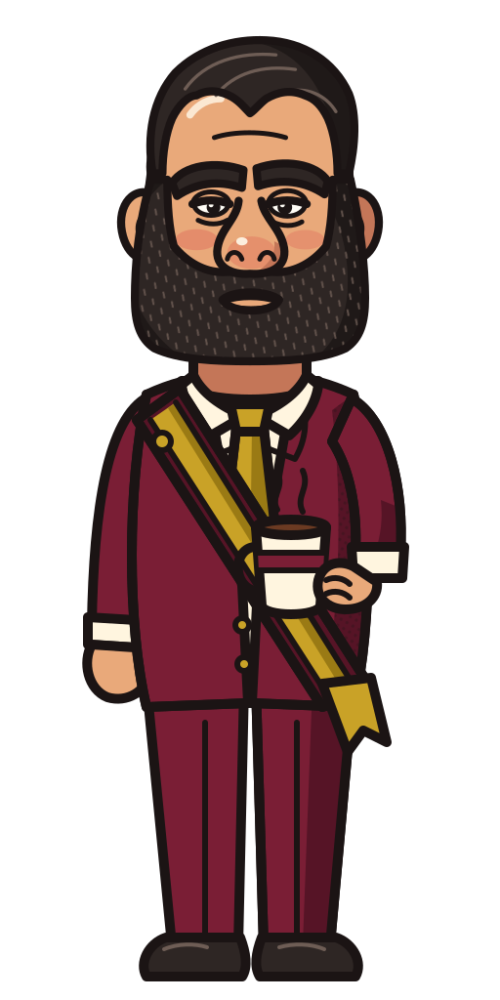
Douglas Ruaso fugitivo
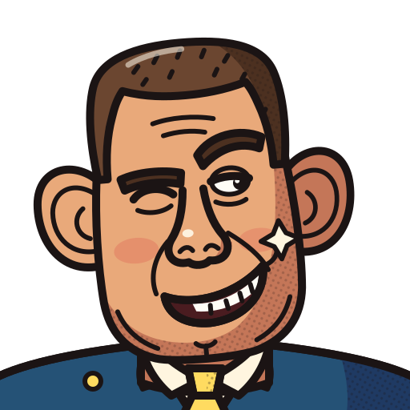
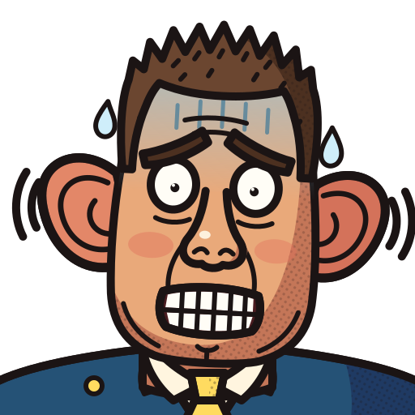
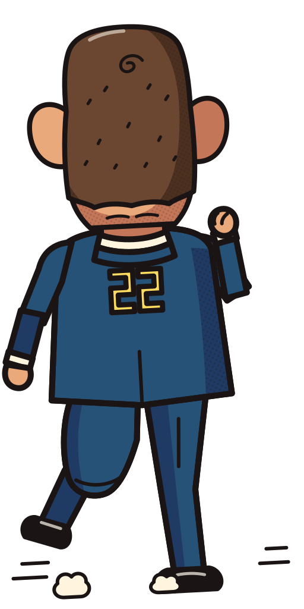
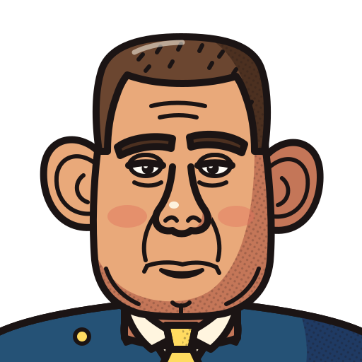
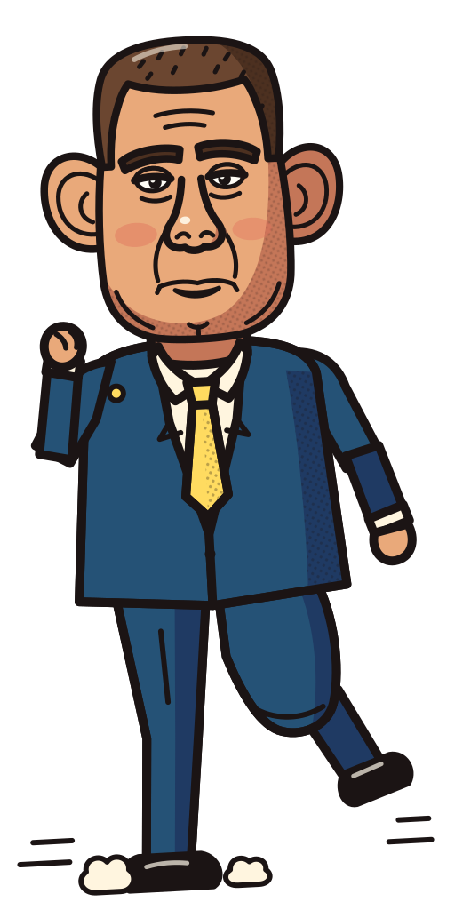
Rodrigo Bacellarcap. 4 · Alerj
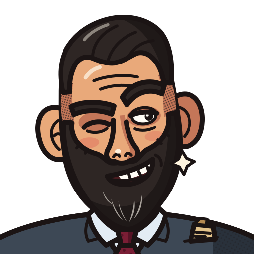
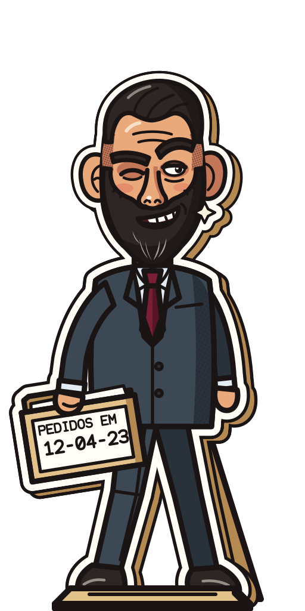
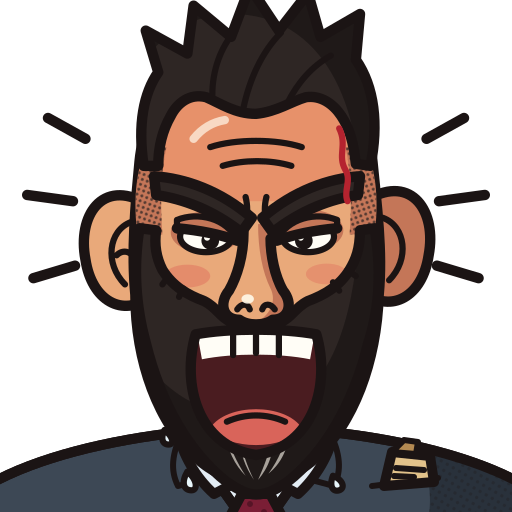
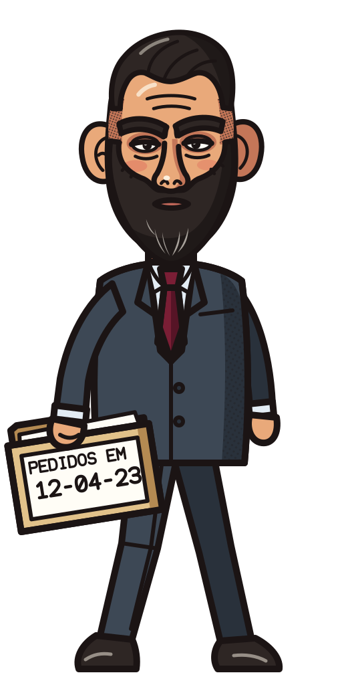
Felipe Curicap. 2 · Segurança
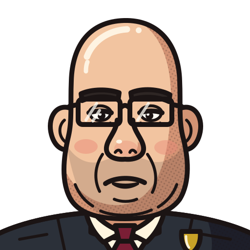
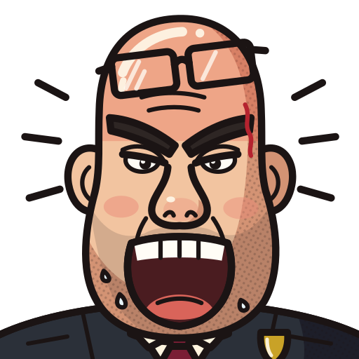
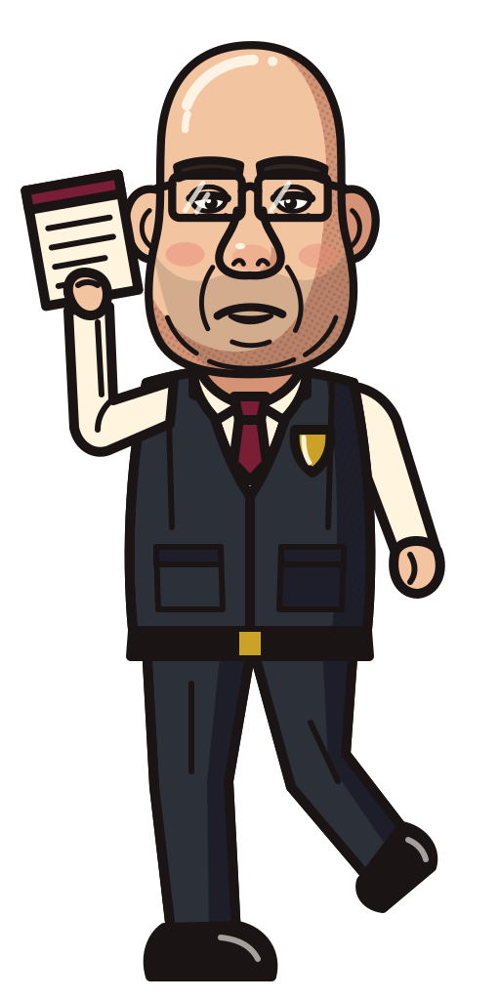
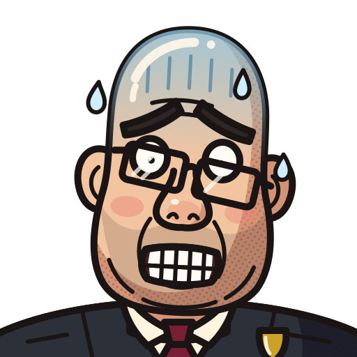
Capitão Nelsoncap. 5 · Final
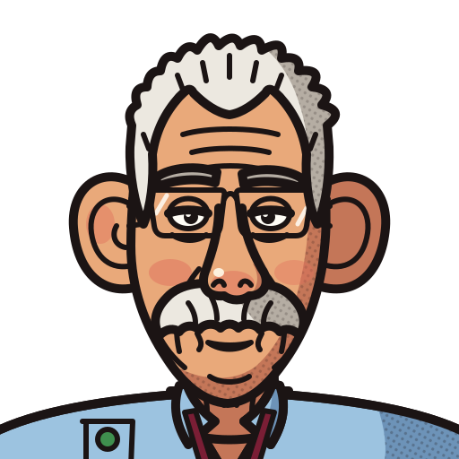
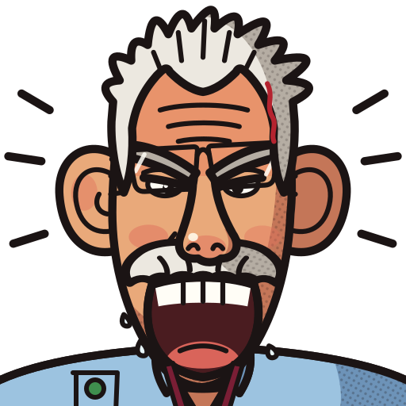
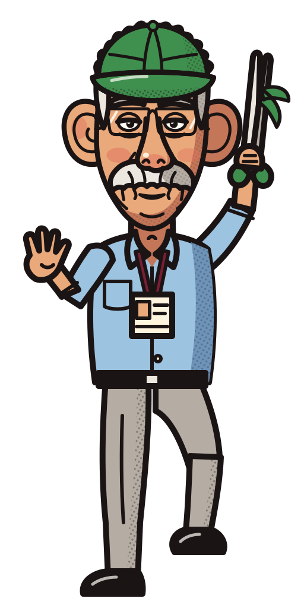
Altineu Côrtescap. 1 · Obras
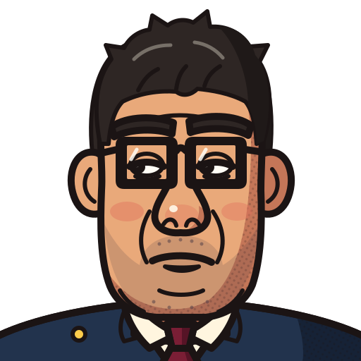
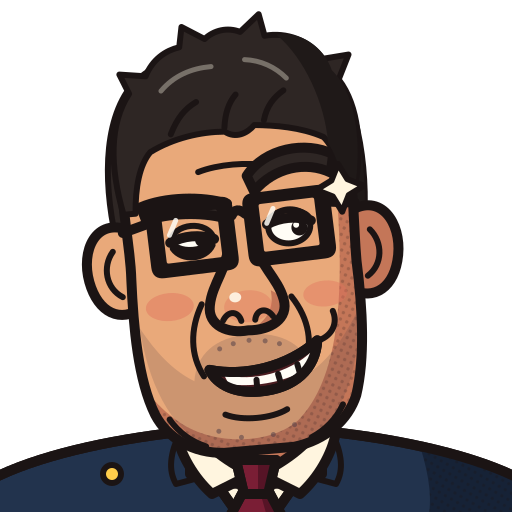
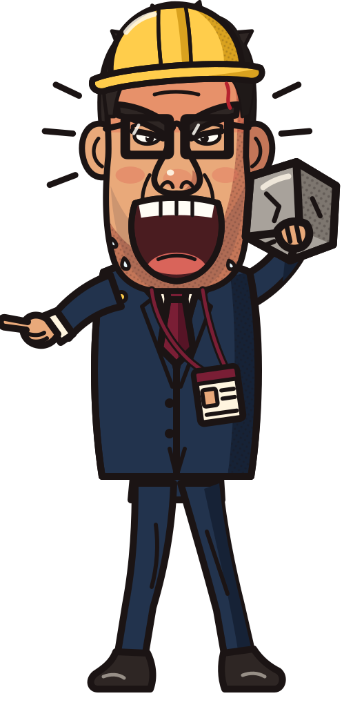